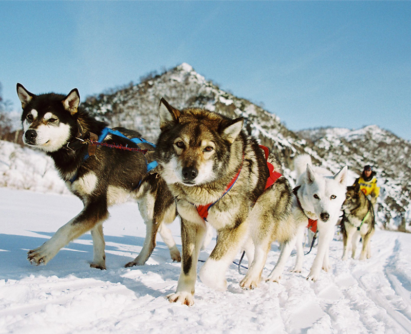
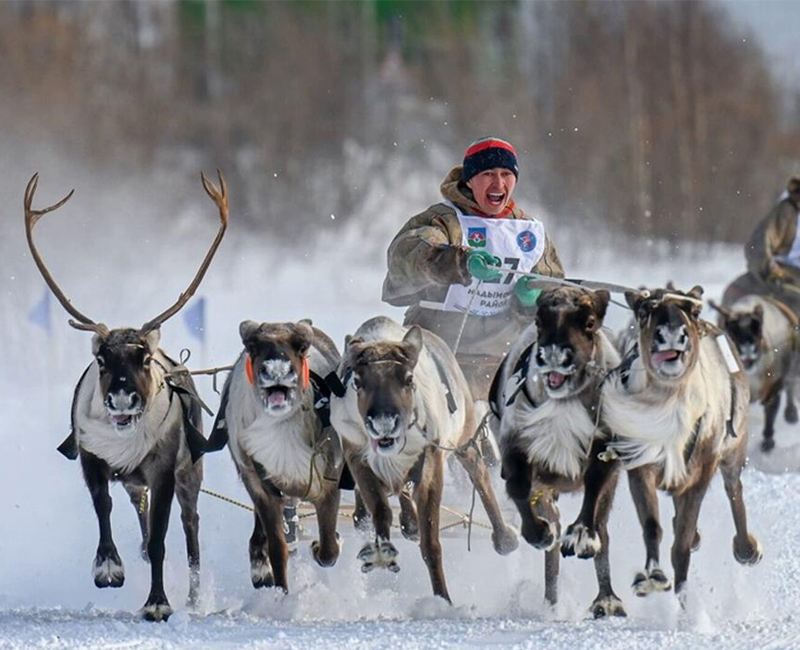
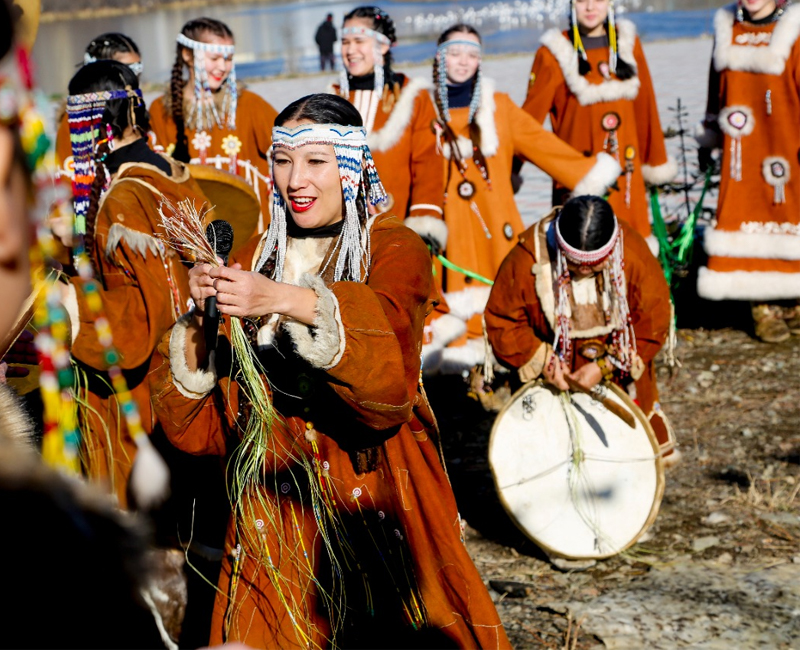
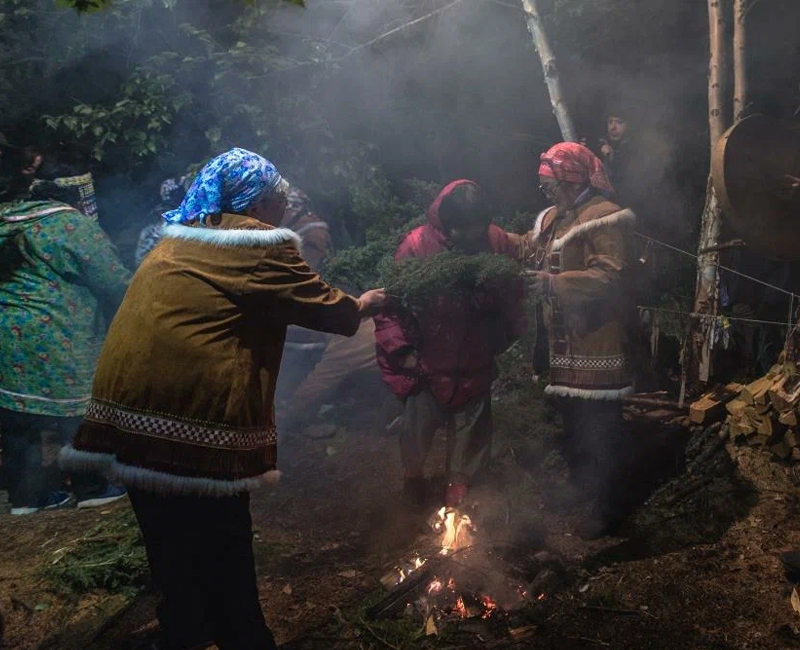
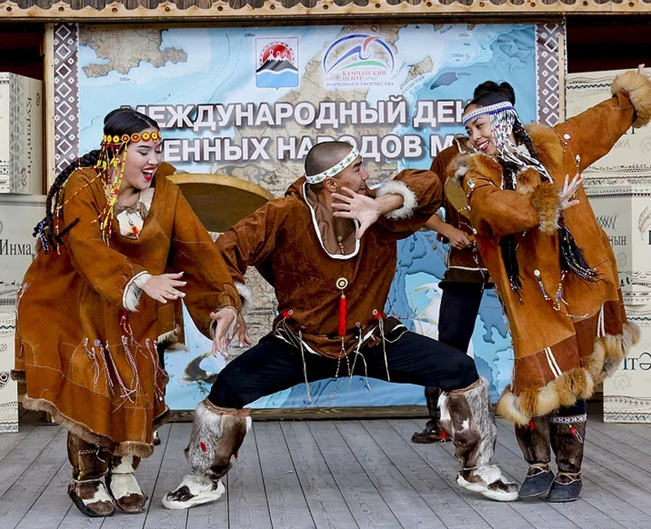
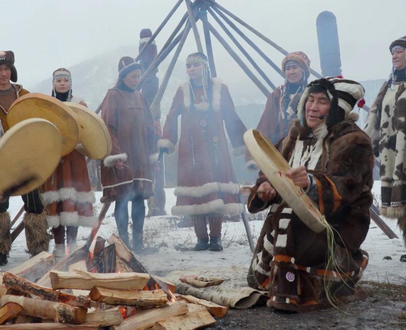

На Камчатке ежегодно проводятся множество различных празников. Некоторые из них берут своё происхождение из традиций предков, живущих ранее на полуострове, некоторые были воосозданы для того, чтобы жители и гости полуострова не забывали о местных традициях.
Итак, главные праздники Камчатки:
1. Беренгия
Традиционная камчатская гонка на собачьих упряжках «Берингия» проводится на полуострове с 1990 года. С 2022 года спортивное состязание выросло в большой зимний фестиваль, объединивший в себе спорт, культуру и бизнес. В рамках фестиваля в феврале и марте 2023 года запланировано проведение мероприятий
11–15 февраля – чемпионат по снежным дисциплинам ездового спорта «Берингия. Авача»
16–25 февраля – этнокультурный марафон «Берингия - Арктика» и выставка-ярмарка «Сказочная Камчатка»
18 февраля – детская гонка на собачьих упряжках «Дюлин»
20–22 февраля – деловой форум «Дальний Восток - зима открытий»
25 февраля – национальный спортивный праздник «Елизовский спринт - 2022»
25–26 февраля – гонка-пролог «Берингии», старт основной гонки
4 марта – фестиваль зимних видов спорта «Снежный путь»
ЧТО ТАКОЕ БЕРИНГИЯ? Камчатская традиционная гонка на собачьих упряжках «Берингия» живет в душе каждого жителя полуострова. Из года в год в течение десятилетий, под свист и команды каюров, собаки с громким лаем бегут по бескрайним просторам Камчатки навстречу вулканам и Тихому океану.
ЦЕННОСТЬ БЕРИНГИИ Берингия – это и спорт, и игра, и важная миссия. Ценность «Берингии» – в людях, для которых она создана, в празднике, который она приносит в далекие и труднодоступные поселки края, где ее ждут с нетерпением целый год.
В 2022 году Берингия перестала быть просто спортивным состязанием, и превратилась в настоящий Фестиваль ярких праздников, спортивных соревнований, деловых встреч и просветительских миссий для самых отдаленных уголков края.
Зимний Фестиваль «Берингия-2023» охватит все районы Камчатского края, каждый из которых имеет свою историю, быт и культуру, так или иначе тесно связанную с жизненным укладом коренных народов полуострова.
2. День оленевода
Народ: эвены
Время проведения: март
Место проведения: село Тымлат, село Эссо
Календарь официальных праздников Камчатки открывает День оленевода, который проводится в первое воскресенье марта в селе Тымлат Карагинского района, селе Эссо Быстринского районе и других населенных пунктах края. Национальный обряд эвенского народа призван привлечь внимание к их исконному ремеслу, повысить его престиж, заинтересовать молодежь и передать вековые знания.
В этот день можно увидеть завораживающие танцы и северное многоборье, услышать песни национальных коллективов и получить порцию адреналина, посетив гонки на оленьих упряжках. Проголодавшихся гостей угощают горячей шурпой и другими национальными блюдами.
3. Анюгыт
Народ: коряки
Время проведения: апрель-май
Место проведения: Петропавловск-Камчатский
Аюангыт — корякский обрядовый праздник пробуждения природы или праздник Миролюбия, который проводится в конце апреля, начале мая. В 2022 году его отметили на стойбище «Кайныран» в поселке Раздольном, в 30 минутах езды от Петропавловска-Камчатского. Гости праздника любовались выступлениями национальных ансамблей, приняли участие в мастер-классах по горловому пению, нымыланскому танцу, выделке шкуры и созданию этнического браслета «Аноан».
Во время обрядовой части «Подношение огню» старейшина традиционно обратился к священным местам и духам земли с просьбой даровать добрый и светлый год.
4. Нургенек
Народ: эвены
Время проведения: июнь
Место проведения: Анавгай
Камчатка настолько удивительный край, что здесь можно встретить Новый год даже летом, а именно в третье воскресенье июня, когда на полуострове отмечают «Нургенек». Это эвенский Новый год, который вошел в число официальных праздников Камчатского края в 2010 году. Весь день гостей торжества развлекают фольклорные коллективы, а танцевальный марафон увлекает и детей, и взрослых. Сама встреча Нового года проводится, как и положено, в полночь.
Под звуки бубна разжигают ритуальные костры и проходят через огонь, оставляя в прошлом долгую зиму, неприятности ушедшего года, и встречая новое солнце. Завершается празднество танцем, который исполняют все участники, взявшись за руки и образуя круг — символ солнца.
5. День аборигена
Народ: все коренные жители
Время проведения: август
Место проведения: Петропавловск-Камчатский и Елизово
Этот праздник объединяет все коренные народы, проживающие на территории Камчатского края. Он проходит в августе и приурочен к Международному дню коренных малочисленных народов мира. День аборигена не является национальным праздником, но именно здесь гости могут познакомиться со всем многообразием культуры народов Камчатки.
На празднике представители коренных народов делятся своими верованиями и обычаями, рассказывают об особенностях быта, представляют этнические творческие номера. Традиционно в День Аборигена проходит красочная выставка ремесленников — резчиков по дереву и кости, умельцев, работающих с мехами, бисером и кожей.
Также в рамках праздника проводится фестиваль «Золотые родники», где участвуют десятки фольклорных ансамблей со всей Камчатки. Кроме того, горожане и гости края могут попробовать камчатскую уху из красной рыбы и другие национальные блюда местной кухни.
6. Хололо
Народ: коряки
Время проведения: ноябрь
Место проведения: Петропавловск-Камчатский
В первое воскресенье ноября празднуют еще один день радости, благодарения и чествования природы — корякский праздник «Хололо» или День нерпы. Он традиционно проходит в центре Петропавловска-Камчатского и в селе Тымлат Карагинского района. Обязательная часть праздника — обряды подношения морю, обряды на удачу с радостными восклицаниями: «Оло-ло! Оло-ло!», ритуальные песни и танцы, «проводы» рыбы и животных с пожеланиями вернуться на следующий год. Обряды нередко проводится в познавательно-развлекательном формате: гостям сначала рассказывают о его истории и значении в жизни народа, а потом приглашают повеселиться во время его проведения. Гостей угощают ухой и толкушей — традиционным блюдом, приготовленным в ступке из рыбьей икры, кедровых орехов, местных ягод и трав.
